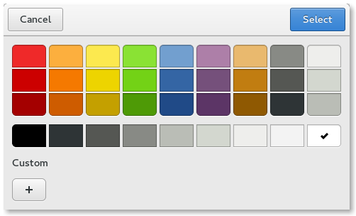

ColorDialog QML Type
A native color dialog. More...
| Import Statement: | import Qt.labs.platform 1.1 |
| Since: | Qt 5.8 |
| Inherits: |
Properties
- color : color
- currentColor : color
- options : flags
Detailed Description
The ColorDialog type provides a QML API for native platform color dialogs.

To show a color dialog, construct an instance of ColorDialog, set the desired properties, and call open(). The currentColor property can be used to determine the currently selected color in the dialog. The color property is updated only after the final selection has been made by accepting the dialog.
MenuItem {
text: "Color"
onTriggered: colorDialog.open()
}
ColorDialog {
id: colorDialog
currentColor: document.color
}
MyDocument {
id: document
color: colorDialog.color
}
Availability
A native platform color dialog is currently available on the following platforms:
- macOS
- Linux (when running with the GTK+ platform theme)
The Qt Labs Platform module uses Qt Widgets as a fallback on platforms that do not have a native implementation available. Therefore, applications that use types from the Qt Labs Platform module should link to QtWidgets and use QApplication instead of QGuiApplication.
To link against the QtWidgets library, add the following to your qmake project file:
QT += widgets
Create an instance of QApplication in main():
#include <QApplication> #include <QQmlApplicationEngine> int main(int argc, char *argv[]) { QApplication::setAttribute(Qt::AA_EnableHighDpiScaling); QApplication app(argc, argv); QQmlApplicationEngine engine; engine.load(QUrl(QStringLiteral("qrc:/main.qml"))); return app.exec(); }
Note: Types in Qt.labs modules are not guaranteed to remain compatible in future versions.
Property Documentation
color : color |
This property holds the final accepted color.
Unlike the currentColor property, the color property is not updated while the user is selecting colors in the dialog, but only after the final selection has been made. That is, when the user has clicked OK to accept a color. Alternatively, the accepted() signal can be handled to get the final selection.
See also currentColor and accepted().
currentColor : color |
This property holds the various options that affect the look and feel of the dialog.
By default, all options are disabled.
Options should be set before showing the dialog. Setting them while the dialog is visible is not guaranteed to have an immediate effect on the dialog (depending on the option and on the platform).
Available options:
| Constant | Description |
|---|---|
ColorDialog.ShowAlphaChannel | Allow the user to select the alpha component of a color. |
ColorDialog.NoButtons | Don't display OK and Cancel buttons (useful for "live dialogs"). |